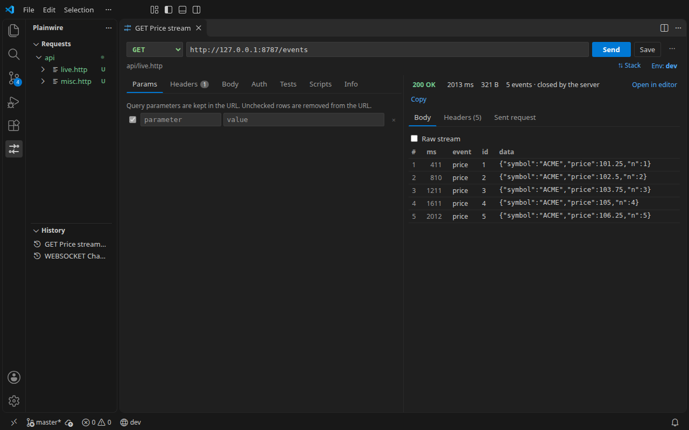

Server-sent events (SSE) in VS Code, from a .http file
Server-sent events are how many APIs push updates over plain HTTP: live feeds, job progress, notifications, and the token-by-token replies of chat and LLM APIs. The response has Content-Type: text/event-stream and stays open while the server writes data: lines. A normal API client waits for the response to finish, so you see nothing, or a timeout. Plainwire shows each event as it arrives, lets you stop the stream, and can check the events in tests and in CI.
Support for text/event-stream is one of the most-reacted open requests for REST Client (issue #493, 49 reactions when we read it on 20 November 2026).

Try it on a public stream
Wikimedia publishes every edit to its wikis as a public event stream. Put this in a file such as stream.http and press Send above the request:
### Wikimedia recent changes # @max-events 5 # @timeout 30s # @assert status == 200 # @assert header content-type contains event-stream # @assert events.length == 5 # @assert events[0].data.meta.domain exists GET https://stream.wikimedia.org/v2/stream/recentchange Accept: text/event-stream
The events fill the response view as they come in. After five, Plainwire closes the stream and runs the four checks. Without # @max-events, the stream runs until you press Stop or the timeout ends it.
How a stream ends
A stream has no natural end, so all of these keep the events that arrived and count as a response, not an error:
| Ends because | Shown as |
|---|---|
| The server closed the connection | closed by the server |
| You pressed Stop | stopped |
# @max-events N events arrived | max events reached |
The time limit ran out: # @timeout 30s on the request, else the plainwire.timeoutMs setting (60 s by default), or --timeout in the CLI | timed out |
Checks on events
Add # @assert lines with the events subject. Event data that is JSON is parsed, so you can reach into it with a path:
### Stream a reply
# @max-events 50
# @assert status == 200
# @assert header content-type contains event-stream
# @assert events.length > 1
# @assert events[0].event == message
# @assert events[0].data.delta isString
# @assert events[-1].data == "[DONE]"
POST {{baseUrl}}/v1/chat/stream
Content-Type: application/json
Authorization: Bearer {{token}}
{ "prompt": "Say hello", "stream": true }
events.length: how many events arrived.events[0]is the first event,events[-1]the last. Each hasevent(the type,messageby default),data,id(the last event ID so far) andtimeMs(milliseconds after the request started).datalines of one event are joined with a newline, as browsers do. Comment lines (: keep-alive) are skipped.- All the usual operators work:
==,contains,matches,exists,isNumberand the rest (full list).
In CI
The free plainwire CLI handles streams the same way. Give each stream a # @max-events or # @timeout so the job does not wait for the full timeout:
$ plainwire run stream.http ✓ GET Wikimedia recent changes 200 · 1214 ms · 5 events (max-events) · 4/4 checks
That line is from a real run against the Wikimedia stream above. See running .http files in CI for the GitHub Action and JUnit reports.
Details and limits
- Any method works (
GET,POSTwith a body, and so on); Plainwire recognises the stream by the response’sContent-Type, not by the request. - Compressed streams (
gzip,deflate,br) are decompressed as they arrive. - The Raw stream box shows the text exactly as received; Open in editor opens it in a tab.
- Plainwire does not reconnect when a stream drops, and does not send
Last-Event-IDby itself. Add the header to the request if you want to resume. - Chained variables such as
{{name.response.body.$.x}}read the raw stream text, so JSONPath into a stream does not work; use checks oneventsinstead. - WebSocket is a different protocol, with its own syntax: see WebSocket requests.
FAQ
Does it work in Cursor, Windsurf and VSCodium?
Yes, it is the same extension. Install the .vsix from the latest release; see installing in Cursor and VSCodium.
Is anything sent to Plainwire?
No. There is no account and no telemetry. The extension makes no network requests except the ones you send, and the source is on GitHub (MIT).